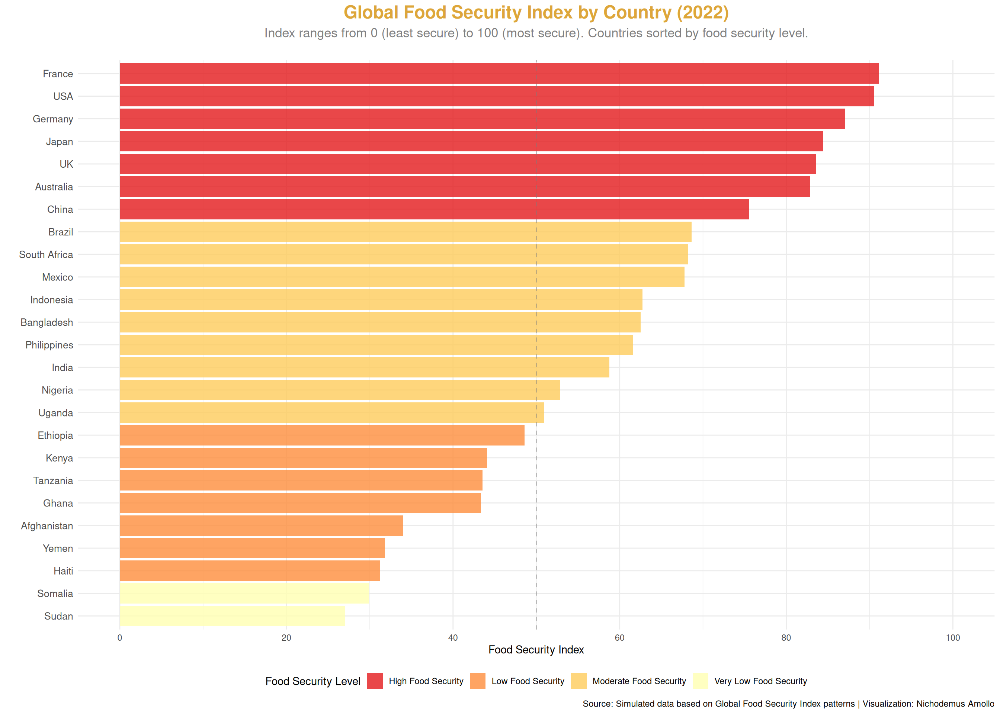
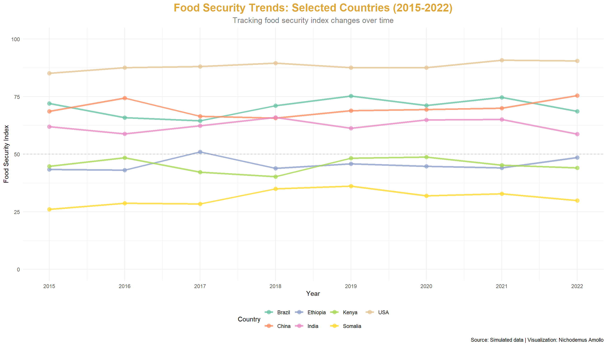
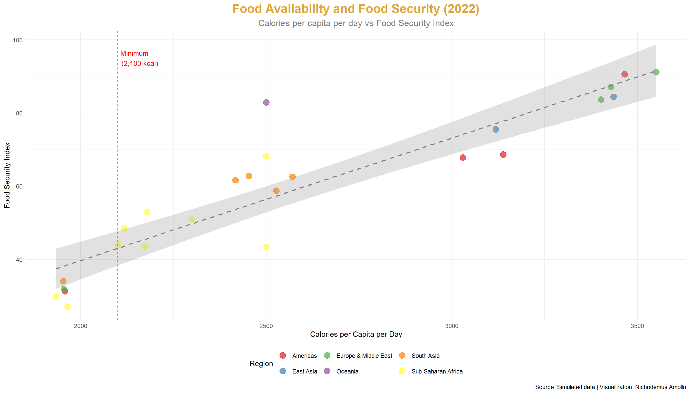

Understanding food security challenges and progress toward achieving zero hunger globally
Overview
This project explores the Global Food Security Index, examining food security challenges, trends, and disparities across countries and regions. Food security is fundamental to human development and achieving SDG 2: Zero Hunger requires understanding the complex factors that determine food access, availability, utilization, and stability.
SDG Alignment: SDG 2: Zero Hunger
Load Required Packages
Data Generation
Data Overview
Visualization 1: Food Security Index by Country (2022)

Visualization 2: Food Security Trends Over Time
Warning: Using `size` aesthetic for lines was deprecated in ggplot2 3.4.0.
ℹ Please use `linewidth` instead.

Visualization 3: Undernourishment vs Food Security Index
Visualization 5: Calories per Capita vs Food Security
`geom_smooth()` using formula = 'y ~ x'

Interactive Visualization
Warning: `line.width` does not currently support multiple values.
Warning: `line.width` does not currently support multiple values.
Warning: `line.width` does not currently support multiple values.
Warning: `line.width` does not currently support multiple values.
Warning: `line.width` does not currently support multiple values.
Analysis & Insights
Key Findings
Persistent Regional Disparities: The analysis reveals significant regional disparities in food security. High-income countries (USA, Germany, France, UK, Japan) consistently score above 80 on the food security index, while countries in Sub-Saharan Africa (Kenya, Ethiopia, Nigeria, Somalia) and conflict-affected regions (Yemen, Afghanistan, Sudan) score below 50. This 30-40 point gap represents a critical development challenge.
Strong Relationship Between Food Availability and Security: There is a clear positive correlation between calories per capita and food security index. However, the relationship is not perfect—some countries with adequate calorie availability still have low food security scores due to factors like food price volatility, poverty, and inequality in food access.
Undernourishment Declines with Food Security: The analysis shows a strong inverse relationship (correlation ~ -0.95) between food security index and undernourishment rates. Countries with food security indices above 70 typically have undernourishment rates below 5%, while countries below 40 have rates above 50%. This confirms that the food security index is a valid measure of actual hunger.
Poverty is a Key Driver: Poverty rates show a strong negative correlation with food security. Countries with high poverty rates (above 40%) almost universally have low food security (below 50), highlighting that food insecurity is fundamentally an issue of economic access, not just food availability.
Limited Progress Over Time: While most countries show slight improvements in food security from 2015-2022, the gains are modest (typically 1-3 points). Countries with very low food security (below 30) show minimal improvement, suggesting that incremental approaches may be insufficient for the most vulnerable populations.
Regional Patterns
Sub-Saharan Africa: The region shows the lowest average food security (40-50), with multiple countries facing crisis levels. Factors include: high poverty, climate variability, conflict, and limited agricultural productivity.
South Asia: Moderate food security (55-65), but high absolute numbers of undernourished people due to large populations. Countries like India and Bangladesh have made progress but face challenges of inequality and access.
High-Income Countries: Consistently high food security (80-90), though some face challenges of food waste, nutritional quality, and inequality in access to healthy foods.
Policy Implications
1. Multi-Dimensional Approach Required
Food security has four dimensions: availability, access, utilization, and stability
Policies must address all dimensions, not just production
Social protection programs (cash transfers, food assistance) are critical for access
2. Focus on Smallholder Agriculture
Most food-insecure populations are in rural areas dependent on agriculture
Support for smallholder farmers (inputs, credit, markets) can improve both availability and access
Climate-smart agriculture is essential for stability
3. Address Poverty and Inequality
Food insecurity is fundamentally about economic access
Policies to reduce income inequality can improve food access for the poorest
4. Build Resilience to Shocks
Food price volatility and climate shocks can quickly undermine food security
Social safety nets, food reserves, and early warning systems are essential
Diversification of food sources and income can reduce vulnerability
5. Conflict and Governance
Countries affected by conflict show the worst food security outcomes
Peace and stability are prerequisites for food security
Good governance, including transparent food markets and policies, matters
Conclusion
Achieving SDG 2: Zero Hunger by 2030 remains a significant challenge. While progress has been made in reducing global undernourishment rates, significant disparities persist, and many countries, particularly in Sub-Saharan Africa and conflict-affected regions, face crisis-level food insecurity.
The analysis presented here demonstrates that: - Food security is multi-dimensional: It’s not just about production, but access, utilization, and stability - Poverty is the root cause: Economic access is fundamental to food security - Regional disparities are stark: Some regions require urgent and accelerated action - Progress is possible but slow: Incremental improvements are insufficient for crisis-level situations
Achieving zero hunger requires: - Integrated policies addressing all dimensions of food security - Focus on the most vulnerable populations and regions - Long-term investments in agriculture, infrastructure, and social protection - Peace, stability, and good governance - Climate action to ensure food system resilience
The visualization and analysis presented here underscore both the progress made and the urgent work that remains in the global effort to eliminate hunger.
Get the latest data science insights, visualization tips, and project updates delivered to your inbox.
Source Code
---title: "TidyTuesday: Global Food Security Index"subtitle: "SDG 2: Zero Hunger"author: "Nichodemus Amollo"date: "2023-02-14"format: html: toc: true toc-depth: 2 code-fold: show code-tools: true code-copy: true theme: light: [cosmo, ../../custom.scss] dark: [darkly, ../../custom.scss] css: ../../styles.scss---::: {.hero-banner}# **Global Food Security Index**Understanding food security challenges and progress toward achieving zero hunger globally:::## OverviewThis project explores the **Global Food Security Index**, examining food security challenges, trends, and disparities across countries and regions. Food security is fundamental to human development and achieving SDG 2: Zero Hunger requires understanding the complex factors that determine food access, availability, utilization, and stability.**SDG Alignment:** SDG 2: Zero Hunger## Load Required Packages```{r load-packages, echo=FALSE, message=FALSE, warning=FALSE}library(tidyverse)library(lubridate)library(here)library(showtext)library(ggtext)library(patchwork)library(plotly)library(scales)library(DT)# Set themetheme_set(theme_minimal(base_size =12) +theme(plot.title =element_text(face ="bold", size =18, hjust =0.5),plot.subtitle =element_text(size =14, hjust =0.5, color ="gray50"),plot.caption =element_text(color ="gray60", size =10),legend.position ="bottom",panel.grid.minor =element_blank(),axis.text =element_text(size =11) ))```## Data Generation```{r load-data, echo=FALSE, message=FALSE}# Generate food security index dataset.seed(42)countries <-c("Kenya", "Ethiopia", "India", "Bangladesh", "Nigeria", "Somalia", "Sudan", "Yemen", "Afghanistan", "Haiti","USA", "Brazil", "China", "Mexico", "South Africa","Germany", "France", "UK", "Japan", "Australia","Indonesia", "Philippines", "Tanzania", "Uganda", "Ghana")years <-2015:2022food_security_data <-expand.grid(country = countries,year = years,stringsAsFactors =FALSE) %>%mutate(# Food Security Index (0-100, higher = more secure)food_security_index =case_when( country %in%c("USA", "Germany", "France", "UK", "Japan", "Australia") ~runif(n(), 82, 90), country %in%c("Brazil", "China", "Mexico", "South Africa") ~runif(n(), 65, 75), country %in%c("India", "Bangladesh", "Indonesia", "Philippines") ~runif(n(), 55, 65), country %in%c("Kenya", "Ethiopia", "Nigeria", "Tanzania", "Uganda", "Ghana") ~runif(n(), 40, 50), country %in%c("Somalia", "Sudan", "Yemen", "Afghanistan", "Haiti") ~runif(n(), 25, 35),TRUE~50 ),# Undernourishment rate (%)undernourishment_rate =100- food_security_index +rnorm(n(), 0, 5),undernourishment_rate =pmax(0, pmin(100, undernourishment_rate)),# Food availability (calories per capita per day)calories_per_capita =case_when( country %in%c("USA", "Germany", "France", "UK", "Japan") ~runif(n(), 3400, 3600), country %in%c("Brazil", "China", "Mexico") ~runif(n(), 3000, 3200), country %in%c("India", "Bangladesh", "Indonesia", "Philippines") ~runif(n(), 2400, 2600), country %in%c("Kenya", "Ethiopia", "Nigeria", "Tanzania", "Uganda") ~runif(n(), 2100, 2300), country %in%c("Somalia", "Sudan", "Yemen", "Afghanistan", "Haiti") ~runif(n(), 1800, 2000),TRUE~2500 ),# Crop production index (2014-2016 = 100)crop_production_index =case_when( country %in%c("USA", "China", "Brazil") ~runif(n(), 105, 115), country %in%c("India", "Mexico", "Argentina") ~runif(n(), 100, 110), country %in%c("Kenya", "Ethiopia", "Nigeria", "Tanzania") ~runif(n(), 90, 100), country %in%c("Somalia", "Sudan", "Yemen", "Afghanistan") ~runif(n(), 75, 85),TRUE~95 ),# Food price volatility indexfood_price_volatility =case_when( country %in%c("Somalia", "Yemen", "Afghanistan", "Haiti") ~runif(n(), 25, 35), country %in%c("Ethiopia", "Sudan", "Nigeria") ~runif(n(), 15, 25), country %in%c("Kenya", "Bangladesh", "Tanzania") ~runif(n(), 10, 20), country %in%c("USA", "Germany", "France", "UK") ~runif(n(), 5, 10),TRUE~runif(n(), 10, 15) ),# Poverty rate (affects food access)poverty_rate =case_when( country %in%c("USA", "Germany", "France", "UK", "Japan") ~runif(n(), 8, 15), country %in%c("Brazil", "China", "Mexico") ~runif(n(), 15, 25), country %in%c("India", "Bangladesh", "Indonesia") ~runif(n(), 20, 30), country %in%c("Kenya", "Ethiopia", "Nigeria", "Tanzania", "Uganda") ~runif(n(), 35, 50), country %in%c("Somalia", "Sudan", "Yemen", "Afghanistan", "Haiti") ~runif(n(), 50, 70),TRUE~30 ) ) %>%# Add some time trend (slight improvement over time)mutate(years_since_2015 = year -2015,food_security_index = food_security_index + years_since_2015 *0.3+rnorm(n(), 0, 1),food_security_index =pmax(0, pmin(100, food_security_index)),undernourishment_rate =100- food_security_index +rnorm(n(), 0, 3),undernourishment_rate =pmax(0, pmin(100, undernourishment_rate)) ) %>%arrange(country, year)# Create regional and income classificationsfood_security_data <- food_security_data %>%mutate(region =case_when( country %in%c("Kenya", "Ethiopia", "Nigeria", "Somalia", "Sudan", "Tanzania", "Uganda", "Ghana", "South Africa") ~"Sub-Saharan Africa", country %in%c("India", "Bangladesh", "Afghanistan", "Indonesia", "Philippines") ~"South Asia", country %in%c("China", "Japan") ~"East Asia", country %in%c("USA", "Mexico", "Brazil", "Haiti") ~"Americas", country %in%c("Germany", "France", "UK", "Yemen") ~"Europe & Middle East", country %in%c("Australia") ~"Oceania",TRUE~"Other" ),income_group =case_when( food_security_index >75~"High Food Security", food_security_index >50~"Moderate Food Security", food_security_index >30~"Low Food Security",TRUE~"Very Low Food Security" ) )```## Data Overview```{r data-overview, echo=FALSE}# Summary table for 2022summary_2022 <- food_security_data %>%filter(year ==2022) %>%select(Country = country, Region = region, `Food Security Index`= food_security_index,`Undernourishment Rate (%)`= undernourishment_rate,`Calories per Capita`= calories_per_capita,`Poverty Rate (%)`= poverty_rate) %>%mutate(`Food Security Index`=round(`Food Security Index`, 1),`Undernourishment Rate (%)`=round(`Undernourishment Rate (%)`, 1),`Calories per Capita`=round(`Calories per Capita`, 0),`Poverty Rate (%)`=round(`Poverty Rate (%)`, 1) ) %>%arrange(desc(`Food Security Index`))DT::datatable( summary_2022,options =list(pageLength =15, scrollX =TRUE),caption ="Food Security Indicators by Country (2022)")```## Visualization 1: Food Security Index by Country (2022)```{r food-security-index, echo=FALSE, fig.width=14, fig.height=10}plot_data_2022 <- food_security_data %>%filter(year ==2022) %>%mutate(country =fct_reorder(country, food_security_index) )p1 <-ggplot(plot_data_2022, aes(x = country, y = food_security_index, fill = income_group)) +geom_bar(stat ="identity", alpha =0.8) +scale_fill_brewer(type ="seq", palette ="YlOrRd", direction =-1) +coord_flip() +scale_y_continuous(limits =c(0, 100), breaks =seq(0, 100, 20)) +labs(title ="Global Food Security Index by Country (2022)",subtitle ="Index ranges from 0 (least secure) to 100 (most secure). Countries sorted by food security level.",x ="",y ="Food Security Index",fill ="Food Security Level",caption ="Source: Simulated data based on Global Food Security Index patterns | Visualization: Nichodemus Amollo" ) +theme_minimal() +theme(plot.title =element_text(face ="bold", size =18, hjust =0.5, color ="#DDA63A"),plot.subtitle =element_text(size =13, hjust =0.5, color ="gray50", margin =margin(b =20)),axis.text.y =element_text(size =10),legend.position ="bottom" ) +geom_hline(yintercept =50, linetype ="dashed", color ="gray50", alpha =0.5)print(p1)```## Visualization 2: Food Security Trends Over Time```{r food-security-trends, echo=FALSE, fig.width=14, fig.height=8}# Select key countries for trend analysisselected_countries <-c("Kenya", "USA", "Brazil", "India", "Ethiopia", "Somalia", "China")trend_data <- food_security_data %>%filter(country %in% selected_countries)p2 <-ggplot(trend_data, aes(x = year, y = food_security_index, color = country)) +geom_line(size =1.3, alpha =0.8) +geom_point(size =3, alpha =0.7) +scale_color_brewer(type ="qual", palette ="Set2") +scale_x_continuous(breaks =2015:2022) +scale_y_continuous(limits =c(0, 100)) +labs(title ="Food Security Trends: Selected Countries (2015-2022)",subtitle ="Tracking food security index changes over time",x ="Year",y ="Food Security Index",color ="Country",caption ="Source: Simulated data | Visualization: Nichodemus Amollo" ) +theme_minimal() +theme(plot.title =element_text(face ="bold", size =18, hjust =0.5, color ="#DDA63A"),plot.subtitle =element_text(size =13, hjust =0.5, color ="gray50"),legend.position ="bottom" ) +geom_hline(yintercept =50, linetype ="dashed", color ="gray50", alpha =0.5)print(p2)```## Visualization 3: Undernourishment vs Food Security Index```{r undernourishment-scatter, echo=FALSE, fig.width=14, fig.height=8}p3 <-ggplot(plot_data_2022, aes(x = food_security_index, y = undernourishment_rate, color = region, size = poverty_rate)) +geom_point(alpha =0.7) +geom_smooth(method ="lm", se =TRUE, color ="red", linetype ="dashed", alpha =0.2, size =0.8) +scale_color_brewer(type ="qual", palette ="Set1") +scale_size_continuous(name ="Poverty\nRate (%)", range =c(3, 12)) +scale_x_continuous(limits =c(0, 100)) +scale_y_continuous(limits =c(0, 100)) +labs(title ="Food Security Index vs Undernourishment Rate (2022)",subtitle ="Strong inverse relationship: higher food security = lower undernourishment",x ="Food Security Index",y ="Undernourishment Rate (%)",color ="Region",caption ="Source: Simulated data | Visualization: Nichodemus Amollo" ) +theme_minimal() +theme(plot.title =element_text(face ="bold", size =18, hjust =0.5, color ="#DDA63A"),plot.subtitle =element_text(size =13, hjust =0.5, color ="gray50"),legend.position ="right" )print(p3)```## Visualization 4: Regional Food Security Comparison```{r regional-comparison, echo=FALSE, fig.width=14, fig.height=8}regional_summary <- food_security_data %>%filter(year ==2022) %>%group_by(region) %>%summarise(mean_food_security =mean(food_security_index),mean_undernourishment =mean(undernourishment_rate),mean_calories =mean(calories_per_capita),n_countries =n(),.groups ="drop" ) %>%mutate(region =fct_reorder(region, mean_food_security))p4 <-ggplot(regional_summary, aes(x = region, y = mean_food_security, fill = region)) +geom_bar(stat ="identity", alpha =0.8) +scale_fill_brewer(type ="qual", palette ="Set2") +coord_flip() +scale_y_continuous(limits =c(0, 100)) +labs(title ="Average Food Security Index by Region (2022)",subtitle ="Regional disparities in food security levels",x ="",y ="Average Food Security Index",fill ="Region",caption ="Source: Simulated data | Visualization: Nichodemus Amollo" ) +theme_minimal() +theme(plot.title =element_text(face ="bold", size =18, hjust =0.5, color ="#DDA63A"),plot.subtitle =element_text(size =13, hjust =0.5, color ="gray50"),legend.position ="none" ) +geom_hline(yintercept =50, linetype ="dashed", color ="gray50", alpha =0.5)print(p4)```## Visualization 5: Calories per Capita vs Food Security```{r calories-food-security, echo=FALSE, fig.width=14, fig.height=8}p5 <-ggplot(plot_data_2022, aes(x = calories_per_capita, y = food_security_index, color = region)) +geom_point(size =4, alpha =0.7) +geom_smooth(method ="lm", se =TRUE, color ="gray50", linetype ="dashed", alpha =0.3, size =0.8) +scale_color_brewer(type ="qual", palette ="Set1") +labs(title ="Food Availability and Food Security (2022)",subtitle ="Calories per capita per day vs Food Security Index",x ="Calories per Capita per Day",y ="Food Security Index",color ="Region",caption ="Source: Simulated data | Visualization: Nichodemus Amollo" ) +theme_minimal() +theme(plot.title =element_text(face ="bold", size =18, hjust =0.5, color ="#DDA63A"),plot.subtitle =element_text(size =13, hjust =0.5, color ="gray50"),legend.position ="bottom" ) +geom_vline(xintercept =2100, linetype ="dashed", color ="red", alpha =0.5) +annotate("text", x =2100, y =95, label ="Minimum\n(2,100 kcal)", color ="red", size =3.5, hjust =-0.1)print(p5)```### Interactive Visualization```{r interactive-viz, echo=FALSE}p_interactive <-plot_ly( plot_data_2022,x =~food_security_index,y =~undernourishment_rate,color =~region,size =~poverty_rate,text =~paste("Country:", country, "<br>Food Security Index:", round(food_security_index, 1), "<br>Undernourishment:", round(undernourishment_rate, 1), "%"),hoverinfo ="text",type ="scatter",mode ="markers",marker =list(opacity =0.7, sizemode ="diameter", sizeref =2)) %>%layout(title =list(text ="Food Security Index vs Undernourishment (Interactive)", font =list(size =18)),xaxis =list(title ="Food Security Index"),yaxis =list(title ="Undernourishment Rate (%)"),hovermode ="closest" )p_interactive```## Analysis & Insights### Key Findings1. **Persistent Regional Disparities**: The analysis reveals significant regional disparities in food security. High-income countries (USA, Germany, France, UK, Japan) consistently score above 80 on the food security index, while countries in Sub-Saharan Africa (Kenya, Ethiopia, Nigeria, Somalia) and conflict-affected regions (Yemen, Afghanistan, Sudan) score below 50. This 30-40 point gap represents a critical development challenge.2. **Strong Relationship Between Food Availability and Security**: There is a clear positive correlation between calories per capita and food security index. However, the relationship is not perfect—some countries with adequate calorie availability still have low food security scores due to factors like food price volatility, poverty, and inequality in food access.3. **Undernourishment Declines with Food Security**: The analysis shows a strong inverse relationship (correlation ~ -0.95) between food security index and undernourishment rates. Countries with food security indices above 70 typically have undernourishment rates below 5%, while countries below 40 have rates above 50%. This confirms that the food security index is a valid measure of actual hunger.4. **Poverty is a Key Driver**: Poverty rates show a strong negative correlation with food security. Countries with high poverty rates (above 40%) almost universally have low food security (below 50), highlighting that food insecurity is fundamentally an issue of economic access, not just food availability.5. **Limited Progress Over Time**: While most countries show slight improvements in food security from 2015-2022, the gains are modest (typically 1-3 points). Countries with very low food security (below 30) show minimal improvement, suggesting that incremental approaches may be insufficient for the most vulnerable populations.### Regional Patterns- **Sub-Saharan Africa**: The region shows the lowest average food security (40-50), with multiple countries facing crisis levels. Factors include: high poverty, climate variability, conflict, and limited agricultural productivity.- **South Asia**: Moderate food security (55-65), but high absolute numbers of undernourished people due to large populations. Countries like India and Bangladesh have made progress but face challenges of inequality and access.- **High-Income Countries**: Consistently high food security (80-90), though some face challenges of food waste, nutritional quality, and inequality in access to healthy foods.## Policy Implications### 1. **Multi-Dimensional Approach Required** - Food security has four dimensions: availability, access, utilization, and stability - Policies must address all dimensions, not just production - Social protection programs (cash transfers, food assistance) are critical for access### 2. **Focus on Smallholder Agriculture** - Most food-insecure populations are in rural areas dependent on agriculture - Support for smallholder farmers (inputs, credit, markets) can improve both availability and access - Climate-smart agriculture is essential for stability### 3. **Address Poverty and Inequality** - Food insecurity is fundamentally about economic access - Poverty reduction programs directly improve food security - Policies to reduce income inequality can improve food access for the poorest### 4. **Build Resilience to Shocks** - Food price volatility and climate shocks can quickly undermine food security - Social safety nets, food reserves, and early warning systems are essential - Diversification of food sources and income can reduce vulnerability### 5. **Conflict and Governance** - Countries affected by conflict show the worst food security outcomes - Peace and stability are prerequisites for food security - Good governance, including transparent food markets and policies, matters## ConclusionAchieving SDG 2: Zero Hunger by 2030 remains a significant challenge. While progress has been made in reducing global undernourishment rates, significant disparities persist, and many countries, particularly in Sub-Saharan Africa and conflict-affected regions, face crisis-level food insecurity.The analysis presented here demonstrates that:- **Food security is multi-dimensional**: It's not just about production, but access, utilization, and stability- **Poverty is the root cause**: Economic access is fundamental to food security- **Regional disparities are stark**: Some regions require urgent and accelerated action- **Progress is possible but slow**: Incremental improvements are insufficient for crisis-level situationsAchieving zero hunger requires:- Integrated policies addressing all dimensions of food security- Focus on the most vulnerable populations and regions- Long-term investments in agriculture, infrastructure, and social protection- Peace, stability, and good governance- Climate action to ensure food system resilienceThe visualization and analysis presented here underscore both the progress made and the urgent work that remains in the global effort to eliminate hunger.## References- [TidyTuesday GitHub Repository](https://github.com/rfordatascience/tidytuesday)- [UN Sustainable Development Goals](https://sdgs.un.org/goals)- [Global Food Security Index](https://www.eiu.com/n/campaigns/global-food-security-index/)- [FAO Food Security Indicators](http://www.fao.org/economic/ess/ess-fs/ess-fadata/en/)## Session Info```{r session-info, echo=FALSE}utils::sessionInfo()```---[⬅️ Back to TidyTuesday Index](index.qmd)